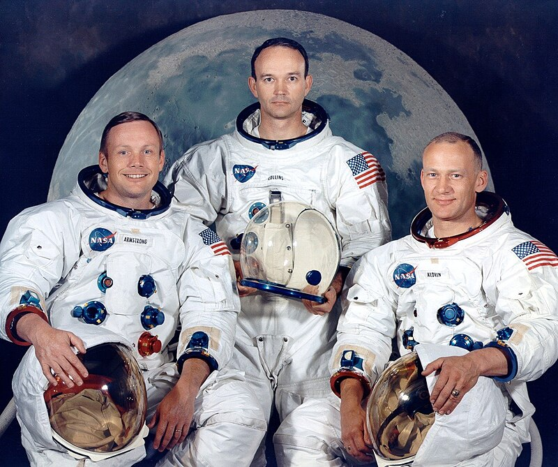

Apollo 11

La misión Apollo 11 fue la primera misión espacial que logró llevar seres humanos a la Luna y traerlos de vuelta a la Tierra con seguridad. Fue lanzada el 16 de julio de 1969 por la NASA, desde el Centro Espacial Kennedy en Florida, utilizando un cohete Saturno V. La tripulación estaba formada por Neil Armstrong, Edwin “Buzz” Aldrin y Michael Collins. Neil Armstrong y Buzz Aldrin descendieron en el módulo lunar Eagle y se convirtieron en los primeros humanos en caminar sobre la superficie lunar el 20 de julio de 1969, mientras Michael Collins permanecía orbitando la Luna en el módulo de comando Columbia.
El objetivo principal de la misión era demostrar la capacidad de Estados Unidos para enviar astronautas a la Luna y regresar con seguridad, así como realizar experimentos científicos y recoger muestras de roca y suelo lunar. Durante la misión, Armstrong pronunció la famosa frase: “Es un pequeño paso para un hombre, pero un gran salto para la humanidad”. Apollo 11 regresó a la Tierra el 24 de julio de 1969, aterrizando en el océano Pacífico. Esta misión marcó un hito histórico en la exploración espacial y consolidó el liderazgo de Estados Unidos en la carrera espacial.

Voyager 1
Voyager 1 es una sonda espacial lanzada por la NASA el 5 de septiembre de 1977 con el objetivo de explorar los planetas exteriores del Sistema Solar y el espacio interestelar. Su misión principal era estudiar Júpiter y Saturno, sus lunas, anillos y campos magnéticos, pero luego continuó su viaje hacia los límites del Sistema Solar. Voyager 1 llevó instrumentos para tomar imágenes, medir campos magnéticos, partículas cargadas y ondas de plasma.
Tras completar su misión planetaria, Voyager 1 se convirtió en el primer objeto hecho por el ser humano en entrar en el espacio interestelar, enviando datos sobre la heliosfera y el medio interestelar. Además, lleva consigo el Disco de Oro, con sonidos, imágenes y mensajes representativos de la humanidad, destinado a comunicar la vida en la Tierra a posibles civilizaciones extraterrestres. La sonda sigue funcionando y transmitiendo información, convirtiéndose en uno de los mayores logros de la exploración espacial.
NEEMO
La misión NEEMO es un programa de la NASA que comenzó en 2001 y consiste en enviar equipos de astronautas y científicos a vivir y trabajar en la estación subacuática Aquarius, ubicada bajo el agua frente a la costa de Florida. El objetivo principal de estas misiones es simular las condiciones de exploración espacial, entrenar a los astronautas y probar técnicas y tecnologías que luego se usarán en misiones espaciales, como viajes a la Luna o a Marte. Durante la misión, los participantes realizan experimentos científicos, ejercicios de mantenimiento, caminatas “extravehiculares” simuladas y entrenamientos de supervivencia, adaptándose a la gravedad reducida y al aislamiento.
NEEMO permite estudiar la psicología, el trabajo en equipo y la logística de vivir en entornos extremos, así como evaluar nuevos equipos y procedimientos antes de aplicarlos en el espacio. Cada misión tiene una duración de una a tres semanas, y ha contribuido significativamente al entrenamiento de astronautas y al desarrollo de futuras misiones de exploración espacial.
Laika
Laika fue una perra mestiza callejera que formó parte de la misión soviética Sputnik 2, lanzada el 3 de noviembre de 1957. El objetivo principal de la misión era que Laika se convirtiera en el primer ser vivo en orbitar la Tierra y permitir a los científicos estudiar los efectos del vuelo espacial en organismos vivos, incluyendo la exposición a microgravedad, el estrés y la radiación. La nave estaba equipada con sensores para monitorear su ritmo cardíaco, respiración y temperatura. La misión no estaba diseñada para traerla de vuelta con vida, y Laika murió pocas horas después del lanzamiento debido al estrés y al sobrecalentamiento de la cápsula. A pesar de su fallecimiento, la misión permitió recopilar información importante para futuras exploraciones espaciales y se considera un hito en la historia de la investigación espacial, aunque también generó un debate ético sobre el uso de animales en experimentos.
La misión Apollo 11 fue la primera misión espacial que logró llevar seres humanos a la Luna y traerlos de vuelta a la Tierra con seguridad. Fue lanzada el 16 de julio de 1969 por la NASA, desde el Centro Espacial Kennedy en Florida, utilizando un cohete Saturno V. La tripulación estaba formada por Neil Armstrong, Edwin “Buzz” Aldrin y Michael Collins. Neil Armstrong y Buzz Aldrin descendieron en el módulo lunar Eagle y se convirtieron en los primeros humanos en caminar sobre la superficie lunar el 20 de julio de 1969, mientras Michael Collins permanecía orbitando la Luna en el módulo de comando Columbia. El objetivo principal de la misión era demostrar la capacidad de Estados Unidos para enviar astronautas a la Luna y regresar con seguridad, así como realizar experimentos científicos y recoger muestras de roca y suelo lunar. Durante la misión, Armstrong pronunció la famosa frase: “Es un pequeño paso para un hombre, pero un gran salto para la humanidad”. Apollo 11 regresó a la Tierra el 24 de julio de 1969, aterrizando en el océano Pacífico. Esta misión marcó un hito histórico en la exploración espacial y consolidó el liderazgo de Estados Unidos en la carrera espacial.
Voyager 1
Voyager 1 es una sonda espacial lanzada por la NASA el 5 de septiembre de 1977 con el objetivo de explorar los planetas exteriores del Sistema Solar y el espacio interestelar. Su misión principal era estudiar Júpiter y Saturno, sus lunas, anillos y campos magnéticos, pero luego continuó su viaje hacia los límites del Sistema Solar. Voyager 1 llevó instrumentos para tomar imágenes, medir campos magnéticos, partículas cargadas y ondas de plasma. Tras completar su misión planetaria, Voyager 1 se convirtió en el primer objeto hecho por el ser humano en entrar en el espacio interestelar, enviando datos sobre la heliosfera y el medio interestelar. Además, lleva consigo el Disco de Oro, con sonidos, imágenes y mensajes representativos de la humanidad, destinado a comunicar la vida en la Tierra a posibles civilizaciones extraterrestres. La sonda sigue funcionando y transmitiendo información, convirtiéndose en uno de los mayores logros de la exploración espacial.
NEEMO
La misión NEEMO es un programa de la NASA que comenzó en 2001 y consiste en enviar equipos de astronautas y científicos a vivir y trabajar en la estación subacuática Aquarius, ubicada bajo el agua frente a la costa de Florida. El objetivo principal de estas misiones es simular las condiciones de exploración espacial, entrenar a los astronautas y probar técnicas y tecnologías que luego se usarán en misiones espaciales, como viajes a la Luna o a Marte. Durante la misión, los participantes realizan experimentos científicos, ejercicios de mantenimiento, caminatas “extravehiculares” simuladas y entrenamientos de supervivencia, adaptándose a la gravedad reducida y al aislamiento. NEEMO permite estudiar la psicología, el trabajo en equipo y la logística de vivir en entornos extremos, así como evaluar nuevos equipos y procedimientos antes de aplicarlos en el espacio. Cada misión tiene una duración de una a tres semanas, y ha contribuido significativamente al entrenamiento de astronautas y al desarrollo de futuras misiones de exploración espacial.
Laika
Laika fue una perra mestiza callejera que formó parte de la misión soviética Sputnik 2, lanzada el 3 de noviembre de 1957. El objetivo principal de la misión era que Laika se convirtiera en el primer ser vivo en orbitar la Tierra y permitir a los científicos estudiar los efectos del vuelo espacial en organismos vivos, incluyendo la exposición a microgravedad, el estrés y la radiación. La nave estaba equipada con sensores para monitorear su ritmo cardíaco, respiración y temperatura. La misión no estaba diseñada para traerla de vuelta con vida, y Laika murió pocas horas después del lanzamiento debido al estrés y al sobrecalentamiento de la cápsula. A pesar de su fallecimiento, la misión permitió recopilar información importante para futuras exploraciones espaciales y se considera un hito en la historia de la investigación espacial, aunque también generó un debate ético sobre el uso de animales en experimentos.